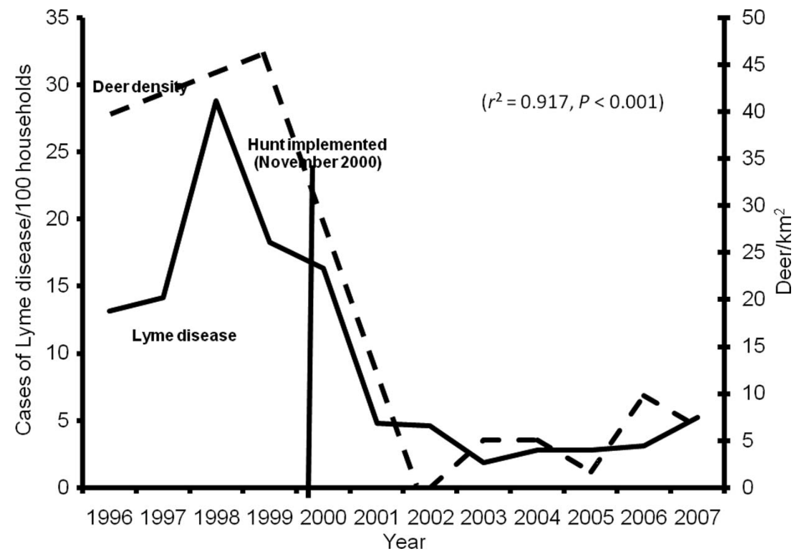
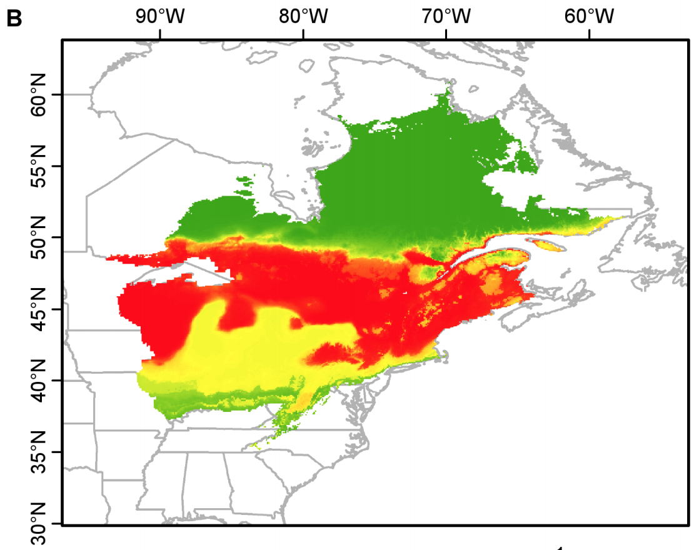
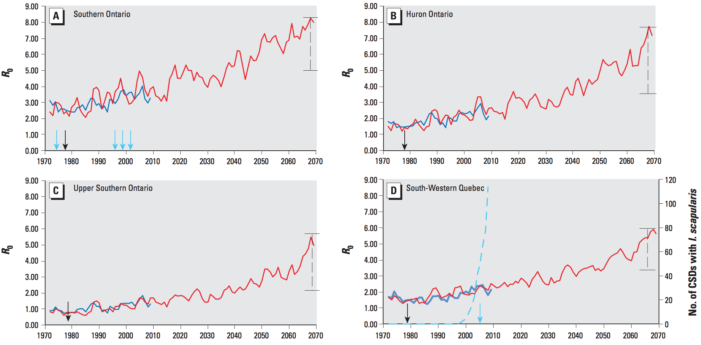
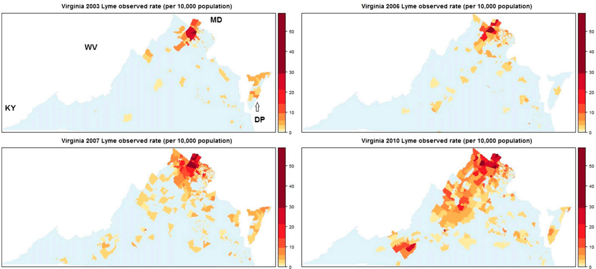

The Spread of Lyme Disease
Christopher Wetherill
TBMH 5054
Ixodes scapularis & Ixodes ricinus
- Species of tick indigenous to North America and Eurasia, respectively
- Climate sensitive
- Highly susceptible to dessication when relative humidity ≤90%
- I. rinicus can survive at 50% humidity in low temps; require ≥70% humidity at higher temps
- Cold winters (or perhaps large temperature swings?) seem to be uniformly lethal
- Climate sensitivity likely only is a limiting factor in the extremes where ticks are unable to avoid harsh conditions
Worldwide Presence of Lyme Disease
The Pathogen—Vector Relationship

doi: 10.1603/ME13232
Climate Effects on Vectors
- Given that ticks are questing, contact rates with hosts are generally assumed to be constant
- Little work to incorporate host-seeking and tick-host abundance into models of tick expansion
- Barring geographic barriers, climate change can reasonably be thought to impact tick-host habitable zones
White-Footed Mouse Habitat Expansion

Predictions for R0

doi: 10.1289/ehp.1307799
Climate Effects on Lyme Disease
- Little research on direct impact of climate on tick-born pathogens
- Plausible that climate changes reducing the overlap between larval and nymphal feeding would reduce risk of disease transmission?
- Who knows! Lots of speculation, few data
Lyme Disease at Home

doi: 10.4269/ajtmh.13-0733
References
Kilpatrick, H., Labonte, A., & Stafford, K. (2014). The relationship between deer density, tick abundance, and human cases of Lyme disease in a residential community. Journal of Medical Entomology, 51, 774 - 784. doi: 10.1603/ME13232
Li, J., Kolivras, K., Hong, Y., Duan, Y., Seukep, S., Prisley, S., et al. (2014). Spatial and temporal emergence pattern of lyme disease in Virginia. American Journal of Tropical Medicine and Hygiene, 91, 1166 - 1172. doi: 10.4269/ajtmh.13-0733
Ogden, N., Fadojević, M., Wu, X., Venkata, D., Leighton, P., & Wu, J. (2014). Estimated effects of projected climate change on the basic reproductive number of the Lyme disease vector Ixodes scapularis. Environmental Health Perspectives, 122, 631 - 638. doi: 10.1289/ehp.1307799
Ostfeld, R., & Brunner, J. (2015). Climate change and Ixodes tick-borne diseases of humans. Philosophical Transactions of the Royal Society of Britain, 370, 20140051. doi: 10.1098/rstb.2014.0051
Roy-Dufresne, E., Logan, T., Simon, J., Chmura, G., & Millien, V. (2013). Poleward expansion of the white-footed mouse (Peromyscus leucopus) under climate change: Implications for the spread of Lyme disease. PLOS One, 8, e80724. doi: 10.1371/journal.pone.0080724
Vollmer, S., Feil, E., Chu, S., Raper, S., Cao, W., Kurtenbach, K., & Margos, G. (2013). Spatial spread and demographic expansion of Lyve borreliosis spirochaetes in Eurasia. Infection, Genetics and Evolution, 14, 145 - 155. doi: 10.1016/j.meegid.2012.11.014